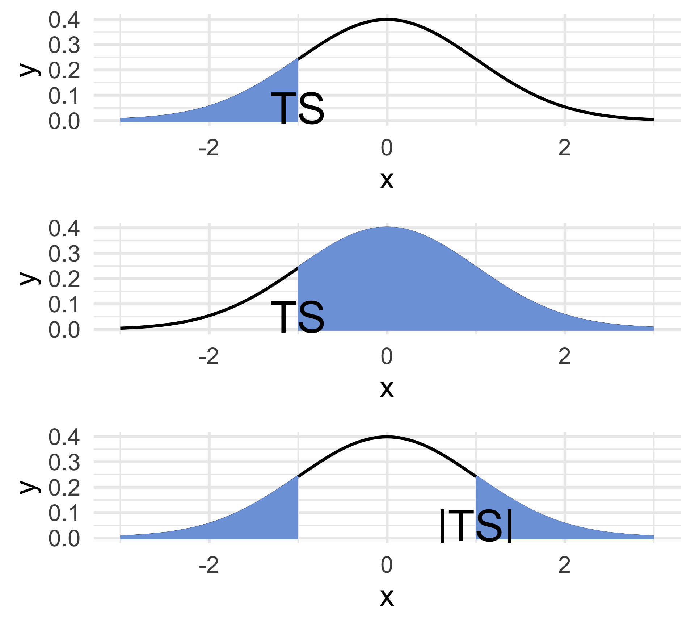

PSTAT 100: Lecture 11
Hypothesis Testing
Department of Statistics and Applied Probability; UCSB
Summer Session A, 2025
\[ \newcommand\R{\mathbb{R}} \newcommand{\N}{\mathbb{N}} \newcommand{\E}{\mathbb{E}} \newcommand{\Prob}{\mathbb{P}} \newcommand{\F}{\mathcal{F}} \newcommand{\1}{1\!\!1} \newcommand{\comp}[1]{#1^{\complement}} \newcommand{\Var}{\mathrm{Var}} \newcommand{\SD}{\mathrm{SD}} \newcommand{\vect}[1]{\vec{\boldsymbol{#1}}} \newcommand{\Cov}{\mathrm{Cov}} \]
Live Demo, Part I…
Question: Are bags of candies balanced?
07:00
Recap
General Framework for Inference

We have a population, governed by a set of population parameters that are unobserved (but that we’d like to make claims about).
To make claims about the population parameters, we take a sample.
We then use our sample to make inferences (i.e. claims) about the population parameters.
- Inference could mean estimation or hypothesis testing
Intro to Hypothesis Testing
Cats - Again!
Toe Beans…
- According to a Quora post, the average cat has about a 10% chance of being born with polydactyly

Polydactyly refers to a condition whereby an animal is born with extra digits (e.g. extra fingers in humans, extra toes in cats, etc.)
Suppose we wish to assess the validity of the Quora claim, using data.
- Note that we’re not necessarily trying to estimate the true incidence of polydactyly among cats!
Cats - Again!
Toe Beans…
Say we collect a simple random sample of 100 cats, and observe 9 polydactyl cats in this sample (i.e. \(\widehat{p}\) = 9%).
Does this provide concrete evidence that the Quora claim is incorrect? Not really!
But, say our sample of 100 cats contains 80 polydactyl cats (\(\widehat{p}\) = 80%). Or, say we saw only 1 polydactyl cat in a sample of 100 (\(\widehat{p}\) = 1%).
Now, it is possible that the Quora claim is true and we just happened to get extraordinarily lucky (or unlucky).
But, it’s probably more likely that we should start to question the validity of the Quora statistic.
Hypothesis Testing
General Framework
So where’s the cutoff - how many polydactyl cats do we need to observe in a sample of n before we start to question the Quora statistic?
This is the general framework of hypothesis testing.
We start off with a pair of competing claims, called the null hypothesis and the alternative hypothesis.
- The null hypothesis is usually set to be the “status quo”. For instance, in our polydactyly example, we would set the null hypothesis (denoted H0, and read “H-naught”) to be “10% of cats are polydactyl.”
Hypothesis Testing
Null Hypothesis
It’s customary to phrase the null and alternative hypotheses mathematically (as opposed to verbally).
For example, letting p denote the proportion of polydactyl cats, the null hypothesis in our Quora example would be \[ H_0: \ p = 0.1 \]
For now, we’ll consider what is known as a simple null hypothesis where the null is “parameter equals some value”.
- Later, we’ll generalize and consider null hypotheses like H0: p ≥ 0.1.
As a rule-of-thumb, the null should include some form of equality; e.g. p > 0.1 is not a valid null whereas p ≥ 0.1 is.
Hypothesis Testing
Alternative Hypothesis
The alternative hypothesis, as the name suggests, provides an alternative to the null: if the null is in fact false, what is the truth?
Given a null of the form H0: p = p0 for some null value p0, there are four main alternatives from which we can choose:
- Lower-Tailed: HA: p < p0
- Upper-Tailed: HA: p > p0
- Two-Tailed (aka Two-Sided): HA: p ≠ p0
- Simple-vs-Simple: HA: p = pA for some pA ≠ p0
To stress: we must pick one of these to be the alternative, and we must pick this before starting our test.
Hypothesis Testing
General Parameter
We can perform hypothesis testing on any population parameter.
- We usually use θ (the Greek letter “theta”) as a placeholder for an arbitrary population parameter.
Null: H0: θ = θ0 (e.g. ‘the average weight of all cats is 9.75 lbs’; ‘the standard deviation of all CO2 emissions is 5.4 mt/yr’; etc.)
Alternative: pick one of the following:
- Lower-Tailed: HA: θ < θ0
- Upper-Tailed: HA: θ > θ0
- Two-Tailed (aka Two-Sided): HA: θ ≠ θ0
- Simple-vs-Simple: HA: θ = θA for some θA ≠ θ0
Hypothesis Testing
Alternative Hypothesis
It is absolutely crucial that the null and alternative hypotheses cannot be simultaneously true.
For instance, if H0: p = p0, then HA: p ≥ p0 is not a valid alternative hypothesis.
- This is because, if the true value of p is in fact p0, then the null and alternative both become true!
Additionally, in a real-world setting, it will be up to you to pick which type of alternative to use.
- On In-Class Assessments, we’ll often tell you which type of alternative to use.
Polydactyly Example
Back to cats! Specifically, suppose we wish to test H0: p = 0.1 against a two-sided alternative HA: p ≠ 0.1.
We previously gained some intuition: If the observed sample proportion of polydactyl cats is, say, 9%, we’d probably not reject the null. But, if the observed sample proportion is 80% or 1%, we’d probably reject the null in favor of the alternative.
So, this reveals a couple of things:
- Our test will likely depend on a point estimator (which is part of the reason we discussed point estimators first!)
- We reject the null in favor of a two-sided alternative if the observed value of the point estimator is very far from the null value.
Polydactyly Example
Here’s another way to rephrase this.
We know to reject the null if \(\widehat{P}_n\) - the observed sample proportion of polydactyl cats - is very far from our null value (10%).
Now, even if the null were true, we would still expect some variation - after all, \(\widehat{P}_n\) is random.
So, our question is: if we assume the true proportion of polydactyl cats is 10%, is the discrepancy between 10% and our observed proportion of polydactyly too large to be due to chance?
This requires information about the sampling distribution of \(\widehat{P}_n\)!
Polydactyly Example
Just like we saw before, there are two ways we could go about obtaining the sampling distribution of \(\widehat{P}_n\): through simulations, or through theory.
Let’s start with simulations!
I’ve gone ahead and created a (hypothetical) population of one million cats, some of which have polydactyly (encoded as
"poly") and some of which do not (encoded as"non").- I won’t tell you how many of each there are!
- For now, I’ll replicate the steps we took in lecture before (which are the steps you took on Lab 04 as well) to construct an approximation to the sampling distribution of the sample proportion.
Polydactyly Example
Code
pop <- read.csv("cats_pop.csv") %>% unlist()
set.seed(100)
props <- c()
for(b in 1:1000){
temp_samp <- sample(pop, size = 2500)
props <- c(props, ifelse(temp_samp == "poly", 1, 0) %>% mean())
}
data.frame(x = props) %>% ggplot(aes(x = x)) +
geom_histogram(aes(y = after_stat(density)), bins = 13, col = "white") +
theme_minimal(base_size = 18) +
ggtitle("Histogram of Sample Proportions",
subtitle = "1000 samples of size 2500") +
xlab("sample proportion")
DeMoivre-Laplace Theorem
Sampling Distribution of the Sample Proportion
DeMoivre-Laplace Theorem
Let \(0 < p < 1\) be fixed and \(S_n \sim \mathrm{Bin}(n, p)\). Then \[ \left( \frac{S_n - np}{\sqrt{np(1 - p)}} \right) \stackrel{\cdot}{\sim} \mathcal{N}(0, 1) \qquad \text{equivalently,} \qquad \left( \frac{\widehat{P}_n - p}{\sqrt{\frac{p(1 - p)}{n}}} \right) \stackrel{\cdot}{\sim} \mathcal{N}(0, 1) \]
- Just like the CLT, this is just a mathematically rigorous way of stating a claim about the sampling distribution of an estimator (in this case, the sample proportion).
Polydactyly Example
Code
data.frame(x = props) %>% ggplot(aes(x = x)) +
geom_histogram(aes(y = after_stat(density)), bins = 13, col = "white") +
theme_minimal(base_size = 18) +
ggtitle("Histogram of Sample Proportions",
subtitle = "1000 samples of size 2500") +
xlab("sample proportion") +
stat_function(fun = dnorm,
args =
list(
mean = mean(pop == "poly"),
sd = sqrt(mean(pop == "poly") * (1 - mean(pop == "poly")) / 2500)
),
col = "blue", linewidth = 1.5
)
Polydactyly Example
- Alright, let’s go back to our hypothesis test. Our test takes the form:
\[ \texttt{decision}(\texttt{data}) = \begin{cases} \text{Reject $H_0$ in favor of $H_A$} & \text{if } |\widehat{P}_n - p_0| > c \\ \text{Fail to Reject $H_0$} & \text{if } |\widehat{P}_n - p_0| \leq c \\ \end{cases}\]
\(\{|\widehat{P}_n - p_0| > c\}\) is just a mathematical way of saying “the distance between \(\widehat{P}_n\) and \(p_0\) is large”
It’s customary to standardize:
\[ \texttt{decision}(\texttt{data}) = \begin{cases} \text{Reject $H_0$ in favor of $H_A$} & \text{if } \left| \frac{\widehat{P}_n - p_0}{\sqrt{\frac{p_0 (1 - p_0)}{n}}} \right| > k \\ \text{Fail to Reject $H_0$} & \text{if } \left| \frac{\widehat{P}_n - p_0}{\sqrt{\frac{p_0 (1 - p_0)}{n}}} \right| \leq k \\ \end{cases}\]
States of the World
In a given hypothesis testing setting, the null is either true or not (though we won’t ever get to know for sure).
Independently, our test will either reject the null or not.
This leads to four states of the world:
| Result of Test | |||
| Reject | Fail to Reject | ||
| H0 | True | ||
| False | |||
- Some of these states are good, others are bad. Which are which?
States of the World
| Result of Test | |||
| Reject | Fail to Reject | ||
| H0 | True | BAD | GOOD |
| False | GOOD | BAD | |
- We give names to the two “bad” situations: Type I and Type II errors.
| Result of Test | |||
| Reject | Fail to Reject | ||
| H0 | True | Type I Error | GOOD |
| False | GOOD | Type II Error | |
States of the World
Type I and Type II Errors
Definition: Type I and Type II errors
- A Type I Error occurs when we reject \(H_0\), when \(H_0\) was actually true.
- A Type II Error occurs when we fail to reject \(H_0\), when \(H_0\) was actually false.
A common way of interpreting Type I and Type II errors are in the context of the judicial system.
The US judicial system is built upon a motto of “innocent until proven guilty.” As such, the null hypothesis is that a given person is innocent.
A Type I error represents convicting an innocent person.
A Type II error represents letting a guilty person go free.
States of the World
Type I and Type II Errors
Viewing the two errors in the context of the judicial system also highlights a tradeoff.
If we want to reduce the number of times we wrongfully convict an innocent person, we may want to make the conditions for convicting someone even stronger.
But, this would have the consequence of having fewer people overall convicted, thereby (and inadvertently) increasing the chance we let a guilty person go free.
As such, controlling for one type of error increses the likelihood of committing the other type.
Hypothesis Test for a Proportion
Let’s return to our task of constructing a hypothesis test for a proportion.
We had, for some (as-of-yet undetermined) critical value k,
\[ \texttt{decision}(\texttt{data}) = \begin{cases} \text{Reject $H_0$ in favor of $H_A$} & \text{if } \left| \frac{\widehat{P}_n - p_0}{\sqrt{\frac{p_0 (1 - p_0)}{n}}} \right| > k \\ \text{Fail to Reject $H_0$} & \text{if } \left| \frac{\widehat{P}_n - p_0}{\sqrt{\frac{p_0 (1 - p_0)}{n}}} \right| \leq k \\ \end{cases}\]
- Here’s the idea: we start by fixing the probability of committing a Type I error (called the level of significance) to some small number α (the Greek letter “alpha”).
- This will, in turn, yield an equation which can be solved for k.
Hypothesis Test for a Proportion
By definition, α is the probability of rejecting a true null. So, \[ \alpha := \Prob_{H_0}\left( \left| \frac{\widehat{P}_n - p_0}{\sqrt{\frac{p_0 (1 - p_0)}{n}}} \right| > k \right) \] where \(\Prob_{H_0}\) is just a shorthand for “probability of (…), under the null”.
The DeMoivre-Laplace theorem tells us that, under the null, \(\frac{\widehat{P}_n - p_0}{\sqrt{\frac{p_0 (1 - p_0)}{n}}}\) is well-approximated by a standard normal distribution.
Hypothesis Test for a Proportion
- The curve represents the density of the test statistic, under the null.
- By construction, the shaded areas must together equal α.
Therefore, the equation we have is \[ 2[1 - \Phi(k)] = \alpha \ \implies \ \boxed{k = \Phi^{-1}\left( 1 - \frac{\alpha}{2} \right)}\]
Remember, we set the value of α at the beginning, to some small number.
- Some common significance levels are 0.01, 0.05, and 0.1, though certain contexts may require smaller or higher levels of significance.
Hypothesis Test for a Proportion
Two-Sided Case
Two-Sided Test for a Proportion:
When testing H0: p = p0 vs HA: p ≠ p0 at an α level of significance, where p denotes a population proportion, the test takes the form \[ \text{Reject $H_0$ if } \left| \frac{\widehat{p}_n - p_0}{\sqrt{ \frac{p_0 (1 - p_0)}{n}}} \right| > \Phi^{-1}\left( 1 - \frac{\alpha}{2} \right) \]
- The set of observed values of the test statistic (in this case, the absolute value quantity that appears in the test above) that correspond to a rejection is called the rejection region.
Hypothesis Test for a Proportion
Upper- and Lower-Tailed
Upper-Tailed Test: Reject H0 if \(\displaystyle \frac{\widehat{P}_n - p_0}{\sqrt{ \frac{p_0 (1 - p_0)}{n}}} > \Phi^{-1}(1 - \alpha)\)
Lower-Tailed Test: Reject H0 if \(\displaystyle \frac{\widehat{P}_n - p_0}{\sqrt{ \frac{p_0 (1 - p_0)}{n}}} < \Phi^{-1}(\alpha)\)
- My advice: draw a picture!
Live Demo, Part II!
Let p denote the true proportion (among all candies manufactured by this brand, in the world) of green candies.
Null: p = 0.2 (i.e. 1/5).
- Alternative: p ≠ 0.2.
Question: At a 5% level of significance, should we reject the null in favor of the alternative?
05:00
p-Values
Instead of phrasing our test in terms of critical values, we can equivalently formulate things in terms of what is known as a p-value.
The p-value of an observed value of a test statistic is the probability, under the null, of observing something as or more extreme (in the direction of the alternative) as what was observed.
- Lower-tailed: ℙ(TS < ts)
- Upper-tailed: ℙ(TS > ts)
- Two-sided: ℙ(|TS| > ts)
- Again, draw a picture!

Your Turn!
Your Turn!
A particular community college claims that 78% of its students continue on to a four-year university. To test these claims, an auditor takes a representative sample of 100 students, and finds that 72 continue on to a four-year university.
In the context of this problem, what is a Type I error? What about a Type II error? Use words!
Use the provided data to test the college’s claims against a two-sided alternative at a 5% level of significance. For practice, conduct your test once using critical values and then again using p-values.
Caution
You’ll need a computer for this one!
05:00
Your Turn!
Your Turn!
According to the World Bank, 54.2% of households in Ethiopia live with access to electricity. Prior evidence suggests, however, that the true proportion may be higher than this number; as such, a sociologist decides to test the World Bank’s claims against an upper-tailed alternative at a 5% level of significance. She collects a representative sample of 130 Ethiopian households, and observes that 67 of these households live with access to electricity. Using the sociologist’s data, conduct the test and phrase your conclusions in the context of the problem. For practice, conduct your test once using critical values and once using p-values.
Caution
You’ll need a computer for this one!
05:00
Next Time
On Monday, we’ll pick up with some more hypothesis testing.
- We’ll consider hypothesis tests for a population mean
- We’ll also consider hypothesis across multiple populations
In lab today, you’ll get some practice with more advanced sampling techniques, including Monte Carlo Methods.
FINAL REMINDER: the Mid-Quarter Project is due THIS SUNDAY, July 13, 2025 by 11:59pm on Gradescope.

PSTAT 100 - Data Science: Concepts and Analysis, Summer 2025 with Ethan P. Marzban